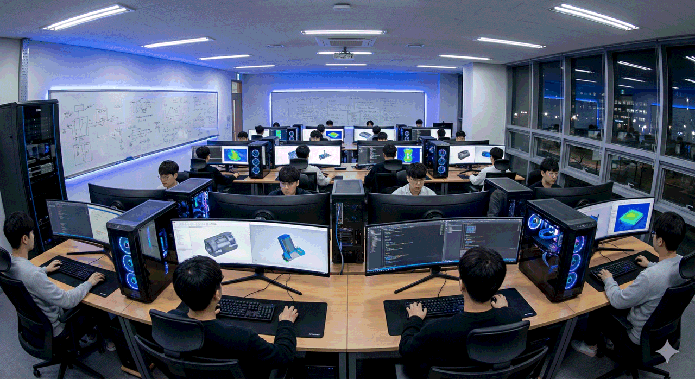

About Us
Kakao University's Department of Computer Science nurtures creative talents who will lead the future IT industry.
Educational Vision
Mission
Nurturing global software talents with creative thinking and practical skills
Educational Goals
- Master fundamental theories and principles of computer science
- Develop practical skills responsive to latest technology trends
- Strengthen teamwork and communication capabilities
- Nurture IT professionals with ethical responsibility
- Develop global competencies and leadership

History
Milestones of the Department
Facilities
State-of-the-art Educational Environment

SW Labs (3)
120 high-performance workstations, dual monitor setup, latest development tools

Research Labs (12)
Specialized research labs in AI, Security, Network, Systems, and more
Seminar Rooms (2)
50-person capacity, video conferencing system, presentation equipment
Awards & Certifications
Certifications
- SW-Centered University Program (2022~2027)
- ABEEK Engineering Education Accreditation
- Designated Information Security Specialized University
Major Awards
- ACM-ICPC Asia Regional Gold Medal (2023)
- National Collegiate Programming Contest Grand Prize (2022)
- Korea Information Security Society Best Paper Award (2021)